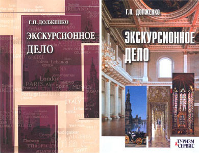

Экскурсионное дело: Учебное пособие. М.: ИКЦ «МарТ»; Ростов н/Д: Издательский центр «МарТ». Изд. 1-е, 2005. - 272 с. Изд. 2-е, 2006. - 304 с.

Аннотация
В учебном пособии обобщен многолетний опыт развития экскурсионного дела в России: история, методика подготовки и проведения экскурсий. Даны детальные рекомендации по проведению городских обзорных и природоведческих экскурсий, а также экскурсий в православных храмах.
Рекомендуется для студентов вузов, обучающихся по туристским специализациям. Пособие может использоваться в работе курсов по подготовке экскурсоводов, а также учителями средних школ.